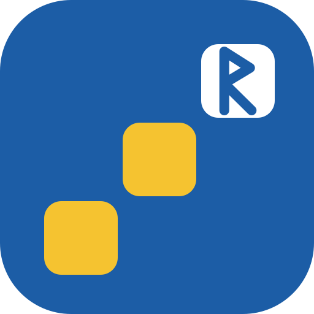

Torbjörn Sonneborn · RuToSo
Hinter RuToSo stehe ich, Torbjörn. In meiner Freizeit baue ich kleine Android-Apps und Webseiten – vor allem für mich und meine Familie, einige davon auch für alle.
Mich reizt dabei, Dinge selbst in der Hand zu haben: Statt für jede Kleinigkeit eine fremde App mit Werbung und Konto zu nutzen, entsteht hier lieber etwas Eigenes, schlicht und ohne Datensammelei.
Eigener App-Store für alle RuToSo-Apps: installiert, aktualisiert und meldet neue Versionen – ohne Google Play.
apps.rutoso.de →Android-Apps für den Alltag, von Werkzeugen bis zu Familien-Apps. Ein Teil ist öffentlich, der Rest bleibt im privaten Bereich.
Zu den Apps →Website für ein Schulprojekt: die fiktive Vertical Farm einer Projektgruppe aus Siegen-Wittgenstein.
siegen-green.rutoso.de →Mein Bauprojekt aus der Klötzchenwelt als 3D-Seite: Burg, Stadt und ein unterirdisches Stargate Command – zum Begehen, mit Bauanleitungen Ebene für Ebene.
bergstadt.rutoso.de →Diese Seite: der Wegweiser zu allen Projekten, schlicht und ohne Tracking.
Startseite →Am einfachsten über die Angaben in der Datenschutzerklärung.